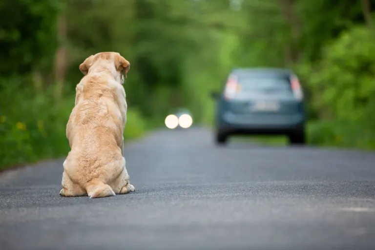
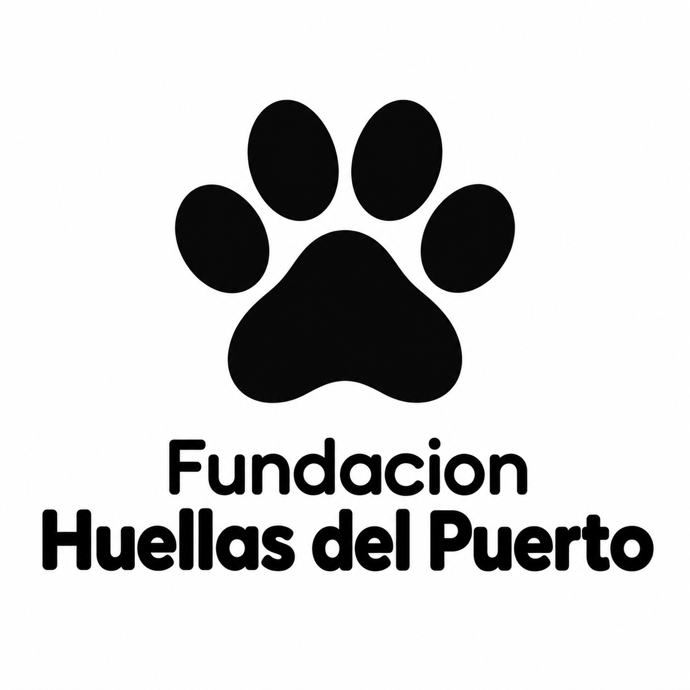

Bienvenido a Fundacion Huellas del Puerto
Somos una fundacion sin fines de lucro de Valparaiso dedicada al rescate, a la rehabilitacion y adopcion de perros y gatos en situacion de calle y/o abandono


Somos una fundacion sin fines de lucro de Valparaiso dedicada al rescate, a la rehabilitacion y adopcion de perros y gatos en situacion de calle y/o abandono
